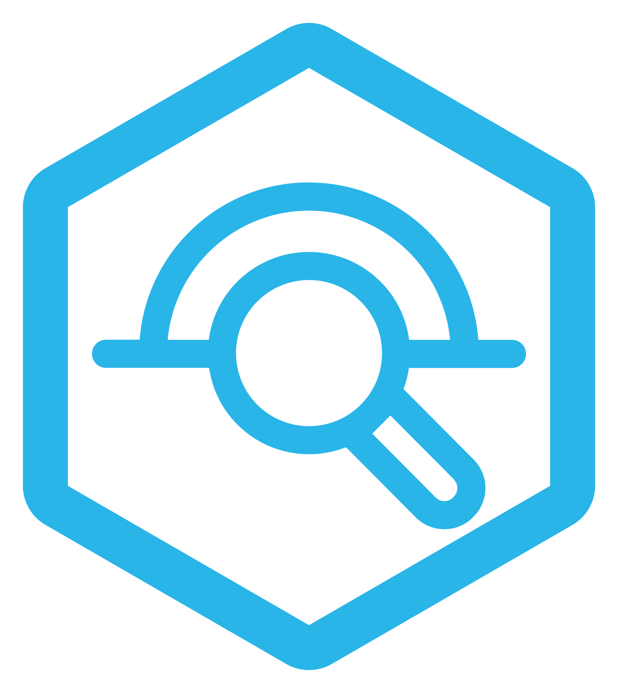

Discover your dataThe most common reason AI answers go wrong isn't the AI. It's unclear questions and the wrong tables. Spend this sprint on what you're answering and where the data lives.
{{FOLDER}}. If you don't have one yet, do 0 · Golden path first.1 · Sharpen the question
Turn the track into one decision and one audience:
| Too broad | MVP-sized | |
|---|---|---|
| Question | "Understand our customers" | "Which subscribers are at risk of churning next month, and why?" |
| Audience | "Everyone" | "The CRM team planning retention campaigns" |
| Decision | none | "Who gets a retention offer this month" |
2 · Write your 10 golden questions
golden_questions.md for your repo.The business tester owns this list. These questions become your verified queries, your test set and your demo script.
- Real questions from real people: Slack threads, Jira tickets, dashboard requests
- Mix levels: 4 simple lookups, 4 comparisons or trends, 2 "why" questions
- Include 1 out-of-scope question, to check that the agent declines gracefully
- For each one, write the expected answer or how to verify it (an existing report, a known number)
# golden_questions.md (save it in your team folder)
| # | Question | Expected answer / how to check | Type |
|---|----------|-------------------------------|------|
| 1 | How many active subscribers did we have last month? | ~X, matches the BI dashboard "Subs overview" | lookup |
| 2 | How did that change versus the same month last year? | ... | trend |
| ...
| 10 | What's the weather in Stockholm? | Politely declines | out of scope |3 · Find the tables
Search the catalog
Snowsight's search box looks across tables, views and columns by name and description.
Start from marts
Prefer curated dbt marts over raw sources. They're already cleaned and tested.
Follow lineage
dbt docs, or the lineage tab in Snowsight, shows where a table comes from.
Ask the owner
Who builds the dashboard for this today? Their SQL is gold.
Quick profiling queries:
-- what's in a schema?
SHOW TABLES IN SCHEMA <db>.<schema>;
DESCRIBE TABLE <db>.<schema>.<table>;
-- grain and size
SELECT COUNT(*), COUNT(DISTINCT <key>), MIN(<date_col>), MAX(<date_col>) FROM <table>;
-- what does a categorical column contain?
SELECT <col>, COUNT(*) FROM <table> GROUP BY 1 ORDER BY 2 DESC LIMIT 20;
-- which tables are actually used (needs ACCOUNT_USAGE access)?
SELECT obj.value:"objectName"::string AS table_name, COUNT(*) AS queries
FROM SNOWFLAKE.ACCOUNT_USAGE.ACCESS_HISTORY, LATERAL FLATTEN(base_objects_accessed) obj
WHERE query_start_time > DATEADD(day, -30, CURRENT_TIMESTAMP())
GROUP BY 1 ORDER BY 2 DESC LIMIT 25;4 · Sketch the model
Before you write any dbt, draw it on paper or in a markdown file:
- Fact table(s): what is one row? (one subscription-month, one view session, one ad impression…)
- Dimensions: what do people slice by? (date, plan, device, region, content genre…)
- Metrics: the 3–5 numbers your golden questions need, each defined in one sentence
- Gaps: does a dbt model need to be built first, e.g. a monthly snapshot?
Ask CoCo
Open CoCo in your workspace and paste one of these. Fill in the <placeholders>. Always read what it proposes before you build.
Look at the tables in models/_marts_sources.yml. For each one: what is one row, which date columns and which number columns does it have?
Our business question is "<question>". Which of these tables do we need, and how do they join?
Profile <table>: row count, date range, distinct values of the categorical columns, and the share of NULLs per column.golden_questions.md with 10 questions and expected answers, a list of 3–10 tables, and a one-sentence definition of every metric. All saved in the team project.